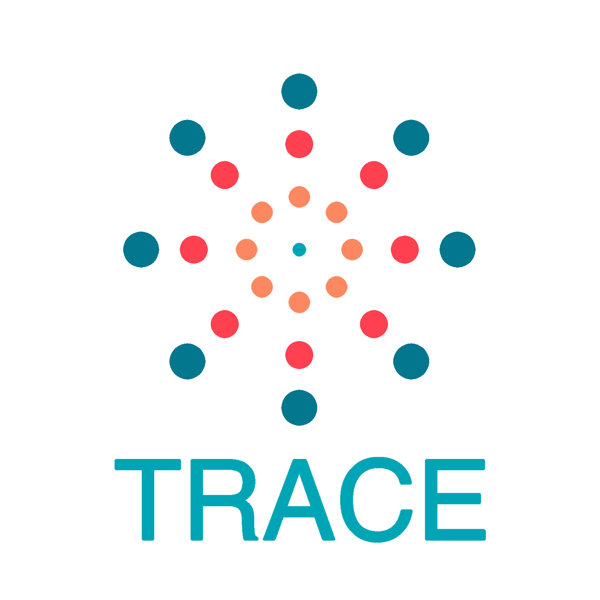

Hey there. I'm
Jack Tran
I'm a computer engineering student at UCSD with a curiosity for software - let's code our way to innovation!
A Glimpse Into My Life
Hello there! I am a Computer Engineering student at UCSD with an expected graduation of 2024. My passion for coding drives me to continuously improve my skills and find new and innovative ways to bring my ideas to life. My ultimate goal is to work for a leading technology company as a software engineer, where I can leverage my coding skills to create products that positively impact people's lives. I am deeply invested in developing solutions that solve real-world problems and have a meaningful impact on society. I have had experiences with working as a student intern for a research lab at UCLA, where I created an AI module to help elementary school students learn.
Aside from being a coding enthusiast, I am a proud member of Phi Gamma Delta fraternity. As a community service leader within the fraternity, I am committed to giving back to society by organizing events and initiatives that benefit those in need. When I'm not coding, I enjoy a healthy lifestyle through working out, playing soccer, and occasionally playing video games with my friends. I also cherish the time and memories with my friends at music festivals.
Experiences
Student Intern | Visual Machines Group at UCLA
June 2019 to August 2019
I managed a group of high school and undergraduate students in producing a module talking about artificial intelligence. Our objective as a team was to focus specifically at computer vision and how AI is used to develop autonomous driving. The task was to break down the complex topic so that even elementary school students can comprehend the material. In addition to the module, I had to transcribed the professor's lecture notes using LaTeX.
Projects
Personal Webpage
January 2023-Present
I built this website to practice my web development skills and learned frontend and backend
technology from CSE 134B. I used JavaScript to make a blog page where users can leave
messages or share
any interests in my work. I had so much fun exploring the world of web technology so please
check it out!
San Diego ZooSeeker App
March 2022-June 2022
I led a team of 6 members in an Agile software process to develop an
Android app that generates a step-by-step guide for users to navigate their trip at
the San Diego Zoo.
I had apply Behavior-Driven development to meet with the client's user stories. I was in
charge of coordinating the team's weekly stand up meetings through our three-weeks sprints.
Additionally, I had to apply multiple design patterns: Strategy, Adapter, Observer, and
Model-View-Presenter to accelerate the development process. JUnit and object mocking were
used to increase test coverage and the
performance of the mobile application by 80% speed.

Workout Planner
February 2022-March 2022
In this personal project, I wanted to create a basic workout planner where users are able to
input their daily workouts and track their progression in the gym. In this dynamic page, all
the datas
are stored in local storage. The goal of implementing this basic web application was to
explore HTML, CSS, and JavaScript.
HIV-Trace
January 2022-March 2022
I integrated an API of a graph as a tool to find transmission clusters and help prevent the
spread of a virus. The application utilizes a variety of algorithms such as Djkstra's,
Kruskal's, and BFS to traverse between
nodes to find the shortest path given to a certain threshold. This application was developed
using C++ and utilized a variety of data structures such as priority queues, custom
comparators, disjoint sets, and map.

Personal Webpage
January 2023-Present
I built this website to practice my web development skills and learned frontend and backend technology from CSE 134B. I used JavaScript to make a blog page where users can leave messages or share any interests in my work. I had so much fun exploring the world of web technology so please check it out!
San Diego ZooSeeker App
March 2022-June 2022
I led a team of 6 members in an Agile software process to develop an Android app that generates a step-by-step guide for users to navigate their trip at the San Diego Zoo. I had apply Behavior-Driven development to meet with the client's user stories. I was in charge of coordinating the team's weekly stand up meetings through our three-weeks sprints. Additionally, I had to apply multiple design patterns: Strategy, Adapter, Observer, and Model-View-Presenter to accelerate the development process. JUnit and object mocking were used to increase test coverage and the performance of the mobile application by 80% speed.
Workout Planner
February 2022-March 2022
In this personal project, I wanted to create a basic workout planner where users are able to input their daily workouts and track their progression in the gym. In this dynamic page, all the datas are stored in local storage. The goal of implementing this basic web application was to explore HTML, CSS, and JavaScript.
HIV-Trace
January 2022-March 2022
I integrated an API of a graph as a tool to find transmission clusters and help prevent the spread of a virus. The application utilizes a variety of algorithms such as Djkstra's, Kruskal's, and BFS to traverse between nodes to find the shortest path given to a certain threshold. This application was developed using C++ and utilized a variety of data structures such as priority queues, custom comparators, disjoint sets, and map.